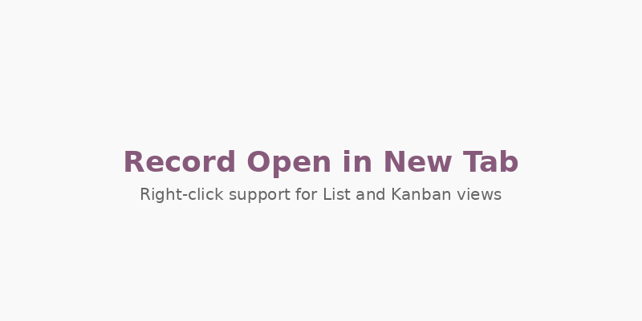
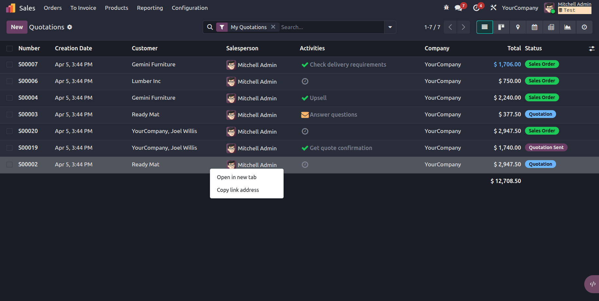
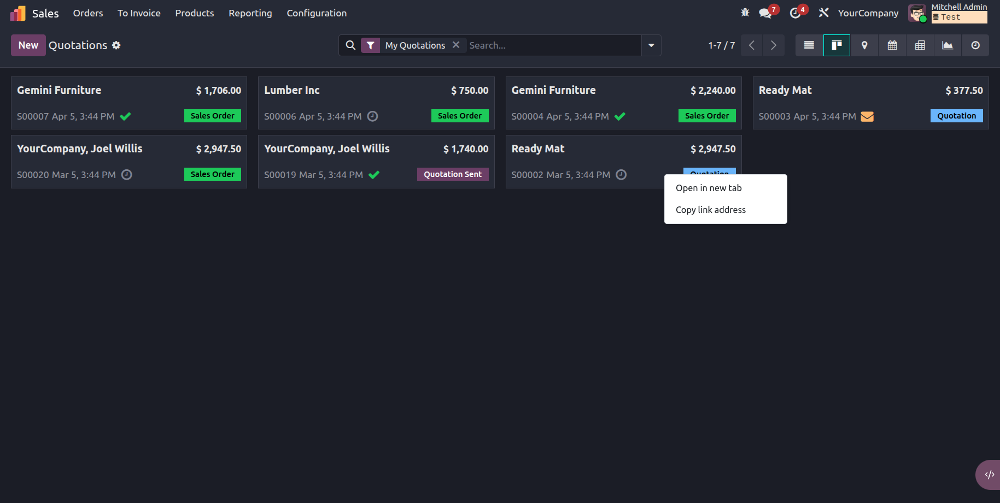

Native Browser Context Menu
Right-click on any record to see browser's standard context menu with "Open link in new tab" option.
Copy Link Address
Easily copy direct URLs to records to share with colleagues.
Shift+RightClick Override
Hold Shift and right-click to access Odoo's native context menu when needed.
Works Everywhere
Compatible with both List and Kanban views across all Odoo apps.
This module patches the List Renderer and Kanban Record components to add proper anchor tags, enabling native browser right-click functionality. No more workarounds - just right-click and open in new tab like any normal web link.